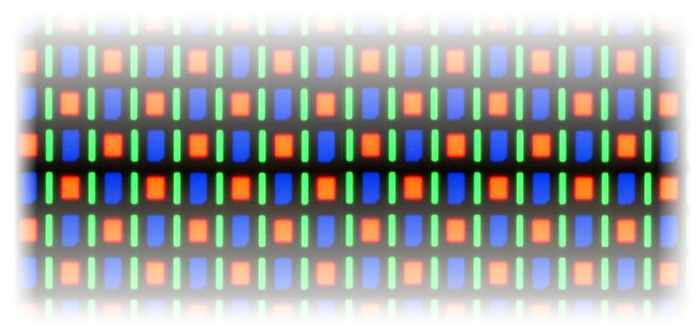

Thermally Activated Delayed Fluorescence (TADF)¶
Given nowadays popularity of smartphones and many other potential applications, OLED materials and organic electronics are a very active field of research and industrial developments.
The following tutorial illustrates how advanced electroluminescence phenomena of OLED materials can be simulated and studied. After a more general introduction to the topic, the approach presented below is largely based on the following recent publications:
P.K. Samanta, D. Kim, V. Coropceanu, J.-L. Brédas Up-Conversion Intersystem Crossing Rates in Organic Emitters for Thermally Activated Delayed Fluorescence: Impact of the Nature of Singlet vs Triplet Excited States, J. Am. Chem. Soc. 139, 4042-4051 (2017).
A broader overview on the topic can be found for example in
Y. Olivier, B. Yurash, L. Muccioli, G. D’Avino, O. Mikhnenko, J. C. Sancho-García, C. Adachi, T.-Q. Nguyen, D. Beljonne Nature of the singlet and triplet excitations mediating thermally activated delayed fluorescence, Phys. Rev. Materials 1, 075602 (2017).
and
Y. Olivier, J.-C. Sancho-García, L. Muccioli, G. D’Avino, D. Beljonne Computational Design of Thermally Activated Delayed Fluorescence Materials: The Challenges Ahead, J. Phys. Chem. Lett. 9, 6149-6163 (2018).
Note
This tutorial illustrates the modeling of TADF on the example of a realistic dye molecule. Expect several hours of computation time for each single-point evaluation.
General Remarks on Modelling OLED Emitters¶
Electronic Structure of OLED Materials¶
OLED devices typically consist of a thin layer of a host material which is doped with an organic (or metalorganic) emitter material. Applying an electric voltage across such semiconductor layers results in free electrons and electron holes, so-called charge carriers, travelling through the material. When these charge carriers recombine, strongly bound electron-hole pairs, so-called excitons are formed, which are entirely localized on a single emitter molecule and thereby correspond to electronic excitations.
As free electrons (and holes) are equally likely to be created with spin up or spin down configurations, 75% of the formed excitons emerge in a triplet state (total spin \(S\) = 1) while 25% are found in a singlet state (\(S\) = 0).
Fig. 27 Mechanism of first generation OLED emitters involving a fluorescent decay path with a 25% maximum theoretical quantum yield.
This spin statistics negatively affects the quantum efficiency of an OLED material, hence on the proportion of electron-hole pairs that successfully undergo a radiative decay in to the ground state \(S_{\mathrm{0}}\) and emit a photon. A direct de-excitation from \(T_{\mathrm{1}}\) to \(S_{\mathrm{0}}\) is spin-forbidden in a non-relativistic theory. In the absence of any spin-orbit coupling effects in the dye, a radiative \(T_{\mathrm{1}} \rightarrow S_{\mathrm{0}}\) emission becomes very unlikely and light is only be emitted from a fluorescent \(S_{\mathrm{1}} \rightarrow S_{\mathrm{0}}\) transition.
To address this problem a second generation of OLED emitters was developed involving OLED dyes containing heavy element atoms. Electrons in the valence shells of such atoms (e.g. Iridium) are subject to significant spin-orbit coupling (SOC). SOC effects in turn, permit \(T_{\mathrm{1}} \rightarrow S_{\mathrm{0}}\) transitions and facilitate so-called intersystem-crossings (ISC) e.g. from \(S_{\mathrm{1}}\) to \(T_{\mathrm{1}}\). As a result the \(T_{\mathrm{1}}\) states become more populated. From there the system undergoes a phosphorescent \(T_{\mathrm{1}} \rightarrow S_{\mathrm{0}}\) decay and emit light.
Fig. 28 Second generation OLED dyes rely on intersystem crossing to convert all excitons into a triplet state from which phosphorescent emissions occur.
While SOC-based emitters can reach quantum efficiencies of nearly 100%, the presence of long-living triplet states can cause chemical degradations. This tendency increases with the energy difference to the ground state (and thus with the frequency of the emitted light). As a result no stable, long-lasting OLED materials to deep blue light have been found as of yet. Apart from that, SOC-based dyes involve relatively rare and expensive heavy elements which significantly increases their costs.
These disadvantages motivated the development of third generation OLED materials: Dye molecules in which the states \(S_{\mathrm{1}}\) and \(T_{\mathrm{1}}\) are close in energy and (to some degree) vibrationally coupled, can exhibit a phenomenon known as thermally activated delayed fluorescence (TADF). Using emitter molecules specifically tailored to maximize TADF, this effect can be exploited to avoid the degradation problems of SOC-based emitters. In addition, TADF occurs in purely organic dyes so that these third generation OLED emitters do not require expensive heavy metal elements.
TADF involves a reverse intersystem crossing (RISC) process, in which \(S_{\mathrm{1}}\) states are populated from \(T_{\mathrm{1}}\) levels. This is followed again by a normal fluorescent transition \(S_{\mathrm{1}} \rightarrow S_{\mathrm{0}}\) and allows for light emissions with nearly 100% quantum yields.
Fig. 29 The thermally assisted reverse intersystem crossing mechanism in third generation OLED materials converts excitons from triplet into singlet states from which a fluorescent radiation process can occur.
RISC competes with other processes such as the \(S_{\mathrm{1}} \rightarrow T_{\mathrm{1}}\) intersystem crossing. However, if non-radiative paths are negligible, \(k_{\mathrm{RISC}}\) represents the rate-determining factor for TADF.
TADF represents a rather complex process and \(k_{\mathrm{RISC}}\) has been shown to be strongly affected by various individual properties of a given dye material:
- singlet-triplet gap \(\Delta E_{\mathrm{ST}} = E(S_{\mathrm{1}}) - E(T_{\mathrm{1}})\)
- spin-orbit interactions
- vibrational couplings between different electronic states
- solvent effects
Each of these aspects will be addressed in the following.
Computational Description of TADF 1: Electronic Structure¶
A small singlet-triplet gap \(\Delta E_{\mathrm{ST}} = E(S_{\mathrm{1}}) - E(T_{\mathrm{1}})\) is essential for the RISC process. Indeed, the reverse intersystem crossing rate \(k_{\mathrm{RISC}}\) is very sensitive regarding \(\Delta E_{\mathrm{ST}}\), so that this quantity has to be predicted very precisely. Because of the required accurate electronic structure descriptions of excited states and their tiny energy differences, computational studies of TADF processes can be quite challenging for practical applications. As TADF dyes typically consist of hundreds of atoms, time-dependent density functional theory (TDDFT) often is the only computationally viable approach still accurate enough for modelling TADF processes.
To perform such TDDFT calculations, a suitable DFT approximation (i.e. exchange-correlation functional) needs to be chosen. Indeed, this is a nontrivial question in itself as TDDFT results based on standard density functional approximations are inherently plagued by the self-interaction error. For the charge-transfer (CT) excitations typically found in OLED emitters such self-interaction effects cause spurious artifacts in the energies and electronic structure of excited states. While hybrid DFT methods ameliorate self-interaction errors, the excitation energies and electronic coupling parameters of TADF emitters are very sensitive regarding the amount of exact exchange incorporated in a given hybrid DFT approximation.
In range-separated hybrid (RSH) DFT methods the amount of exact exchange increases with the electron-electron distance. In many RSH approximations this is used to restore the correct long-range asymptotic behavior of the corresponding potential. Their proper asymptotic behavior renders RSH methods potentially more accurate for the description of electronic excitations. The range-separation of RSH methods is controlled by an additional parameter \(\omega\), which corresponds to the inverse distance of the midpoint of the switching function between short- and long-range terms. The parameter \(\omega\) can be tuned for a given emitter material to improve the description further, say for example by minimizing the difference between the HOMO energy and the first vertical ionization energy. This improves the accuracy compared to RSH descriptions with predetermined \(\omega\)-values.
Excited States Geometry Optimizations¶
Following Samanta et al., we use TDDFT calculations in the Tamm-Dancoff approximation (TDA) to describe the TADF process in 1,2,3,5-tetrakis(carbazol-9-yl)-4,6-dicyanobenzene (4CzIPN), a typical TADF emitter.
Fig. 30 1,2,3,5-tetrakis(carbazol-9-yl)-4,6-dicyanobenzene (4CzIPN)
Thereby we use the range-separated LCY-PBE functional, which employs a Yukawa potential to realize the switching function between long- and short-range terms. The sharpness of the Yukawa potential is controlled by the parameter \(\gamma\), for which a value of 0.22 is used in the following.
Note
The value \(\gamma\) = 0.22 is the result of the RSH-tuning prescription of Karolewski et al. for the 4CzIPN molecule. Thereby the difference between the ionization potential and the HOMO energy is simultaneously minimized for a neutral and anionic system. Please see the PLAMS example tuning the range separation for range separated hybrids. Note, that \(\gamma\) is thereby optimized in the gas-phase. Prescriptions for tuning RSH functionals in solvents can be found in the publications of Joo et al. and Sun et al.
To model the TADF process of 4CzIPN properly, the geometry of the system needs to be relaxed for all three relevant electronic states, \(S_{\mathrm{0}}\), \(S_{\mathrm{1}}\), and \(T_{\mathrm{1}}\), respectively. We can do this from GUI with ADF with the following settings:
- Download the 4CzIPN structure
hereStart AMSinputLoad the structure with File → Import Coordinates…
- Select the following in the Main panel:Task → Geometry OptimizationXC Functional → Range Separated → LCY PBEClick on
 right of the XC Functional fieldEnter Gamma
right of the XC Functional fieldEnter Gamma0.22Return to the Main panelMake sure that Relativity → ScalarBasis set → TZPFrozen core → NoneNumerical quality → GoodClick on the Model panel and select SolvationSolvation method → COSMOCOSMO solvent → TolueneSave the input File → Save as… under e.g. 4CzIPN_GSopt.amsRun the calculation File → Run
A few more additional options are needed to define the excited states geometry optimizations. In the case of the \(S_{\mathrm{1}}\)-optimization:
- In the window with the previously created 4CzIPN_GSopt.ams file still open:Click in the panel bar on Properties and select Excitations (UV/Vis), CDType of excitations → SingletOnlyTDA → YesEnter the Number of excitations
2Tick the Calculate → Charge transfer descriptors boxClick on Properties panel and select Excited State GeometryEnter at the Excitation1ASpin type → SingletSave the input File → Save as… under e.g. 4CzIPN_S1opt.amsRun the calculation File → Run
Analogously for the \(T_{\mathrm{1}}\)-state:
- Click on the Properties panel and select Excitations (UV/Vis), CDType of excitations → TripletOnlyTDA → YesEnter the Number of excitations
2Tick the Calculate → Charge transfer descriptors boxClick on the Properties panel and select Excited State GeometryExcitation enter1ASpin type → TripletSave the input File → Save as… under e.g. 4CzIPN_T1opt.amsRun the calculation File → Run
We are now ready to run all three optimization jobs. Note that, for a system like 4CzIPN an excited states geometry optimization with RSH can take multiple hours. For your convenience, the relaxed structures for the \(S_{\mathrm{0}}\), \(S_{\mathrm{1}}\), and \(T_{\mathrm{1}}\) states, respectively can be downloaded here:
See also
TADF_4CzIPN_GS.xyz4CzIPN ground state structureTADF_4CzIPN_S1.xyz4CzIPN \(S_{\mathrm{1}}\) structureTADF_4CzIPN_T1.xyz4CzIPN \(T_{\mathrm{1}}\) structure
After these optimizations are concluded, the respective minimum energies of the states can be extracted at the end of the logfile. For the ground state,
<Nov12-2020> <03:56:22> Bond Energy -33.76473746 a.u.
For excited states the end of the logfile looks like this (the T1 state in this case):
<Nov13-2020> <04:18:25> Total excited state energy: -33.67697839 Hartree
From there we can extract the following energy differences (neglecting vibrational contributions for the moment):
| Hartree | eV | |
| \(E_{\rm{GS}}\) | -33.764737 | -918.79 |
| \(E_{\rm{S1}}\) | -33.671259 | -916.24 |
| \(E_{\rm{T1}}\) | -33.676978 | -916.40 |
| \(E_{\rm{S1}} - E_{\rm{GS}}\) | 0.093478 | 2.54 |
| \(E_{\rm{T1}} - E_{\rm{GS}}\) | 0.087759 | 2.39 |
| \(\Delta E_{\rm{ST}} = E_{\rm{S1}} - E_{\rm{T1}}\) | 0.005719 | 0.16 |
The result is somewhat different from the results (\(\Delta E_{\mathrm{ST}}\) = 0.01 eV) of the original paper due to the different electronic structure description used therein. Compared to the experimental value of \(\Delta E_{\mathrm{ST}}\) = 0.1 eV, the difference is however smaller and we will use our computed results of 0.16 eV in the subsequent calculations of this tutorial.
The output file provides the charge transfer descriptors according to the prescription of Plasser and Lischka, which are obtained from transition density matrices.
For the \(T_{\mathrm{1}}\) state we find a charge transfer (CT) character of 82% with an average electron-electron hole distance (R_HE) of 4.6 Å, while in the case of \(S_{\mathrm{1}}\) the CT character amounts to 91% with an average of 5.0 Å between the excited electron and electron hole. Note, that such high CT characters and electron-hole distances are a direct consequence of the design principles of typical OLED emitters featuring well-separated electron donor and acceptor groups. In consequence, these excited states also exhibit a relatively small exchange energy, which contributes most to the small \(\Delta E_{\mathrm{ST}}\) value computed above from TDDFT excitation energies.
Vertical Absorption¶
Following Samanta et al. and to analyze the system further, we compute vertical excitations at the ground state geometry to obtain the absorption spectrum of 4CzIPN. Note, that these results do not enter the calculation of the RISC rate but rather serve as an additional assessment of the accuracy of the description employed here. Regarding most aspects this is done analogously to the previous calculations. The main differences are that we now treat the excitations in a spin-orbit description which allows for pure spin-states (i.e. no spin contamination). Furthermore, the response of the solvation model is ignored as the solvent molecules cannot rearrange within the short timespan of a vertical excitation; a better approximation of this interaction requires the optical part of the solvents dielectric constant (see the corresponding section in the ADF Manual).
- Open a new instance of AMSinputLoad the previously optimized GS structure with File → Import Coordinates…In the Main panel:Task → Single PointXC Functional → Range Separated → LCY PBEClick on right of the XC Functional fieldEnter Gamma
0.22Return to the Main panelMake sure that Relativity → ScalarBasis set → TZPFrozen core → NoneNumerical quality → GoodClick on the Model panel and select SolvationSolvation method → COSMOCOSMO solvent → TolueneClick on the Details panel and select COSMOUntick Include response in TDDFTClick on the Properties panel and select Excitations (UV/Vis), CDType of excitations → Spin-Orbit (Perturbative)TDA → YesEnter the Number of excitations5Tick the Calculate → Charge transfer descriptors boxSave the input File → Save as… under e.g. 4CzIPN_GS_VA.amsRun the calculation File → Run
After completing this calculation, we open the results with AMSoutput and search for the results with Response Properties → All Spin-Orbit Coupling Excitation Energies:
Recalling the spin-forbidden transitions appear with near vanishing oscillator strengths in an SOC treatment, we note the following from these results:
- Excitation no. 8 is the lowest with a relevant oscillator strength \(f\), it corresponds to \(S_{\mathrm{0}} \rightarrow S_{\mathrm{1}}\).
- The \(S_{\mathrm{0}} \rightarrow S_{\mathrm{1}}\) excitation energy of 2.77 eV compares well with the experiment value, 2.85 eV.
- At the GS geometry the \(T_{\mathrm{1}}\) and the \(T_{\mathrm{2}}\) state lie below \(S_{\mathrm{1}}\).
Computational Description of TADF 2: Spin-Orbit Coupling¶
As discussed above, transitions between \(S\) and \(T\) states are formally forbidden within a non-relativistic framework. Phosphorescence or intersystem crossings thus become only possible due to the presence of spin-orbit coupling (SOC) effects. Compared to other interactions these couplings are typically small and can therefore be treated as a perturbation of the systems electronic structure mediated by \(\hat{H}_{\mathrm{SOC}}\), the SOC operator. There exist various different approaches and approximation for \(\hat{H}_{\mathrm{SOC}}\). See the recent review of Marian for an overview of spin-orbit methods in the context of excited states electronic structures and intersystem crossing rates.
In this case Fermi’s golden rule provides an expression for the reversed intersystem crossing rate
which will be used in the following. \(|V_{\mathrm{SOC}}|^{2}\) is directly proportional to \(k_{\mathrm{RISC}}\) and is to be understood as coupling term of the matrix representation of \(\hat{H}_{\mathrm{SOC}}\). We model the transition from \(T_{\mathrm{1}}\) to \(S_{\mathrm{1}}\), whereas \(T_{\mathrm{1}}\) actually consists of three individual states the system can assume; one for each possible value of the total angular momentum \(J=-1, 0, 1\). \(|V_{\mathrm{SOC}}|^{2}\) is therefore an average of the three spin-orbit coupling matrix elements (SOCME) between \(S_{\mathrm{1}}\) and the \(T_{\mathrm{1}}\):
As \(|V_{\mathrm{SOC}}|^{2}\) is strongly affecting the reverse intersystem crossing rate, developing novel TADF emitters with larger SOCME values is an important part of many OLED related research activities.
The other important factor entering the \(k_{\mathrm{RISC}}\) rate is \(\rho_{\mathrm{FCWD}}\), the Frank-Condon-weighted density of states, which will be addressed in the corresponding section below.
Calculating Spin-Orbit Couplings¶
The reverse intersystem crossing process itself occurs on a too short timescale for the systems geometry to readapt during the \(T_{\mathrm{1}}\rightarrow S_{\mathrm{1}}\) transition. The factor \(|V_{\mathrm{SOC}}|^{2}\) in the above expression for \(k_{\mathrm{RISC}}\) is therefore computed at the optimized geometry of the \(T_{\mathrm{1}}\) state.
- Open a new instance of AMSinputLoad the previously optimized T1 structure with File → Import Coordinates…In the Main panel:Task → Single PointXC-Functional → Range Separated → LCY PBEClick on right of the XC-Functional fieldEnter Gamma
0.22Return to the Main panelMake sure that Relativity → ScalarBasis set → TZPFrozen core → NoneNumerical quality → GoodClick on the Model panel and select SolvationSolvation method → COSMOCOSMO solvent → TolueneClick on the Details panel and select COSMOMake sure that the Include response in TDDFT box is tickedClick on the Properties panel and select Excitations (UV/Vis), CDType of excitations → Spin-Orbit (Perturbative)TDA → YesEnter the Number of excitations5Tick the Calculate → Charge transfer descriptors boxSave the input File → Save as… under e.g. 4CzIPN_SOCME.ams
After the calculation is completed, open the output file with AMSoutput. In the AMSoutput the SOCME results can be found with Response Properties → Spin-orbit couplings:
The above root mean square coupling element \(|\langle S_{\mathrm{1}}|\hat{H}_{\mathrm{SOC}}|T_{\mathrm{1}}\rangle|\) is then divided by three to represent the average over the three triplet states (see above). From the \(|\langle S_{\mathrm{1}}|\hat{H}_{\mathrm{SOC}}|T_{\mathrm{1}}\rangle|\) value of 0.4 cm-1 we then obtain \(|V_{\mathrm{SOC}}|^{2} =\) (0.4 cm-1)2 / 3 = 8.2\(\cdot\)10-10 eV2.
Computational Description of TADF 3: Vibrations¶
Recall the aforementioned expression for the reverse intersystem crossing rate:
While \(|V_{\mathrm{SOC}}|^{2}\) can be interpreted as probability for the \(T_{\mathrm{1}}\rightarrow S_{\mathrm{1}}\) transition, \(\rho_{\mathrm{FCWD}}\) describes the thermokinetic barrier associated with this process.
Marcus Theory¶
Classical Marcus theory (CMT) provides a simple way to describe this thermokinetic barrier. The potential energy surfaces of both states around their respective minimum structures are thereby described in terms of parabolic functions.
Fig. 31 Potential energy surfaces of the \(S_{\mathrm{1}}\) and \(T_{\mathrm{1}}\) states as quadratic functions centered at \(x_{\mathrm{S1}}\) and \(x_{\mathrm{T1}}\), respectively. In Marcus theory the difference between \(E_{\mathrm{S1/S1}}\) and \(E_{\mathrm{S1/T1}}\) is used to estimate the thermokinetic barrier of the \(T_{\mathrm{1}}\rightarrow S_{\mathrm{1}}\) transition.
Assuming the same curvature of both states, i.e. \(E(T_{1}) = a\cdot x^{2}\) and \(E(S_{1}) = a\cdot (x_{} + x_{\mathrm{S1}} - x_{\mathrm{T1}})^{2} + \Delta E_{\mathrm{ST}}\), one finds the for the \(T_{\mathrm{1}}\rightarrow S_{\mathrm{1}}\) barrier height as the intersection of both parabolas:
Using this barrier height in an Arrhenius-type expression yields then the RISC rate:
The reorganization energy \(\lambda\) can thereby be considered as the energy required to bring the system in the \(S_{\mathrm{1}}\) to the minimum structure of the \(T_{\mathrm{1}}\) state. Designating the energies of the \(S_{\mathrm{1}}\) state at \(x_{\mathrm{S1}}\) and \(x_{\mathrm{T1}}\) as \(E_{\mathrm{S1/S1}}\) and \(E_{\mathrm{S1/T1}}\), respectively, one can use
to calculate \(k_{\mathrm{RISC}}\). We can thereby set up the necessary calculations analogously to the vertical absorption calculations:
- Open a new instance of AMSinputLoad the previously optimized S1 structures with File → Import Coordinates…In the Main panel:Task → Single PointXC-Functional → Range Separated → LCY PBEClick on the right of the XC-Functional fieldEnter Gamma:
0.22Return to the Main panelMake sure that Relativity → ScalarBasis set → TZPFrozen core → NoneNumerical quality → GoodClick on the Model panel and select SolvationSolvation method → COSMOCOSMO solvent → TolueneClick on the Details panel and select COSMOUntick Include response in TDDFTClick on the Properties panel and select Excitations (UV/Vis), CDType of excitations → Spin-Orbit (Perturbative)TDA → YesEnter the Number of excitations5Tick the Calculate → Charge transfer descriptors boxSave the input File → Save as… under e.g. 4CzIPN_S1_S1.ams
Analogously for the S1/T1 calculation we set:
- Load the previously optimized T1 structures with File → Import Coordinates…Repeat the above stepsSave the input File → Save as… under e.g. 4CzIPN_S1_T1.ams
After running the calculations the required energies can be extracted again with AMSoutput. Note, that the excited states energies of \(E_{\mathrm{S1/S1}}\) and \(E_{\mathrm{T1/S1}}\) are obtained as sum of the ground state energy and the respective excitation energy. These can be retrieved in AMSoutput as Total Bonding Energy under Properties → Bonding Energy Decomposition and as the first excitation with a significant oscillator strength under Response Properties → All Spin-Orbit Coupling Excitation Energies, respectively. So, \(E_{\mathrm{S1/S1}}\) and \(E_{\mathrm{S1/T1}}\) can be calculated by addition of its first singlet excitation energy to its bond energy.
For 4CzIPN, this results in a value of \(\lambda\) = \(E_{\mathrm{S1/T1}} - E_{\mathrm{S1/S1}}\) = -916.153 eV - -916.230 eV = 0.076 eV. This result can now be used along with the previously obtained values \(\Delta E_{\mathrm{ST}}\) = 0.16 eV and \(|V_{\mathrm{SOC}}|^{2} =\) 8.2\(\cdot\)10-10 eV2 in the above expressions for \(\rho_{\mathrm{FCWD}}^{\mathrm{CMT}}\) and \(k_{\mathrm{RISC}}\) to yield at a temperature of \(T\) = 298 K:
and thus a reverse intersystem crossing rate of \(k_{\mathrm{RISC}}\) = 5.24\(\cdot\)104 / s. This result underestimates the crossing rate compared to the experimental reference of \(k_{\mathrm{RISC}}\) = 2.7\(\cdot\)106 / s. The reason for this might be due to small discrepancies in either \(\Delta E_{\mathrm{ST}}\) or \(\lambda\) which get amplified by the exponential term in \(\rho_{\mathrm{FCWD}}^{\mathrm{CMT}}\).
Compared to that, Samanta et al. obtained higher rates for 4CzIPN (4.9\(\cdot\)106 – 1.8\(\cdot\)107/ s). This difference can be rationalized by their usage of different DFT approximations, the significantly smaller value of \(\Delta E_{\mathrm{ST}}\) obtained thereby, and a different handling of the spin-orbit couplings. We also note that Samanta et al. argued that for emitters like 4CzIPN \(\lambda\) can be replaced with an effective value between 0.1 and 0.2 eV. When using \(\lambda\) = 0.1 eV instead of the previously calculated reorganization energy, the RISC rate rises to \(k_{\mathrm{RISC}}\) = 8.8\(\cdot\)105 / s.
Franck-Condon Principle and Marcus-Levich-Jortner Theory¶
While the classical Marcus theory often provides acceptably accurate results, it relies on some strong assumptions and the real situation turns out more intricate: First, the potential energy surfaces around both minima are described by the entirety of vibrational normal modes. Each normal mode defines a separate harmonic oscillator system which, in a quantum mechanical description, leads to a separate set of vibrational eigenfunctions (quanta). The Franck-Condon principle then states that the \(T_{\mathrm{1}}\rightarrow S_{\mathrm{1}}\) transition requires a significant overlap between nuclear wavefunctions of both electronic states.
Fig. 32 The Franck-Condon principle describes \(T_{\mathrm{1}}\rightarrow S_{\mathrm{1}}\) transition rate in terms of the overlap between the nuclear vibronic wavefunctions of the initial and final state, respectively.
One can distinguish between two limiting cases: the quanta low frequency vibrations from shallow modes and from rearranging solvent molecules (see below) typically form an essentially continuous spectrum. Pairs of overlapping quanta from low frequency modes will therefore occur at energies close to the intersection of the two parabolic potential curves, which leads to results equivalent to those of classical Marcus theory. Within classical Marcus theory the effect of these modes can be described in terms of a Marcus reorganization energy \(\lambda_{\mathrm{M}}\). If the transition is dominated by high frequency modes, nuclear tunneling effects and the overlap of individual pairs of quanta are prevalent. The effect of such modes consists mainly in a renormalization of the coupling parameters.
An extension of CMT, Marcus-Levich-Jortner theory, includes both of these limiting cases. The high frequency modes can thereby be projected onto the transition path which summarizes them into a single effective mode with frequency \(\omega_{eff}\) and gives rise to the following expression:
Thereby, \(S_{eff}\) denotes the Huang-Rhys factor of this effective mode, which is a measure for the strength of the electron-phonon coupling. \(S_{eff}\) and the corresponding frequency \(\omega_{eff}\) are obtained from the Huang-Rhys factors and frequencies of the individual high frequency normal modes.
Whereas modes with \(\omega_{i} >\) 1000 cm-1 are typically included in the summation.
Samanta et al. computed \(S_{i}\) factors from mode resolved reorganization energies \(\lambda_{i} = k_{i}\Delta Q_{i}^{2}/2\), which in turn results from the frequencies \(k_{i} = \omega_{i}^{2}\) and \(\Delta Q_{i}\), the normal mode projection onto the transition path.
For a large emitter molecule like 4CzIPN however, the calculation of the full Hessian matrix turns out to be computationally too expensive.
Effective Modes and Huang-Rhys Factors from DFTB and FCF¶
In some cases, the DFTB method can be used as a more approximate but efficient alternative to compute the normal modes. The FCF program of the Amsterdam Modeling Suite can then be used to calculate the \(S_{i}\) factors which then lead to the \(S_{eff}\) and \(\omega_{eff}\) values. The following procedure illustrates how this can be achieved with the Amsterdam Modeling Suite.
Warning
The calculation of Huang-Rhys factors crucially depends on the quality of the normal modes. Their computation from TD-DFTB excited states gradient must be carefully tested to determine their validity for a given dye system.
- Open a new instance of AMSinputLoad the previously optimized \(S_{\mathrm{1}}\) structure via File → Import CoordinatesTask → Geometry OptimizationSelect the Frequencies boxModel → SCC-DFTBParameter directory → DFTB.org/mio-1-1 (or similar)Properties → Excitations (UV/Vis)Type of excitations → SingletEnter the Number of excitations
5Calculate the excited state gradient for Excitation number1Save the input File → Save as…

{kind=link}
{kind=link}
{kind=link}
{kind=link}
{kind=link}
{kind=link}
{kind=link}
{kind=link}
{kind=link}
{kind=link}
{kind=link}
Analogously, for the \(T_{\mathrm{1}}\) state:
- Open a new instance of AMSinputLoad the previously optimized \(T_{\mathrm{1}}\) structure via File → Import Coordinates…Properties → Excitations (UV/Vis)Type of excitations → TripletEnter the Number of excitations
5Calculate the excited state gradient for Excitation number1Save the input File → Save as…
See also
4CzIPN_optFreqDFTB_S1.runDFTB optimization and normal modes on \(S_{\mathrm{1}}\)4CzIPN_optFreqDFTB_T1.runDFTB optimization and normal modes on \(T_{\mathrm{1}}\)
After completing both calculations, the binary result files dftb.rkf containing the normal modes are found in the respective directories <jobname>.results. Create a new directory and copy these rkf files naming them e.g. S1_optFreqDFTB.rkf and T1_optFreqDFTB.rkf. Based on these results the program-tool fcf can be invoked to compute \(S_{eff}\) and \(\omega_{eff}\) values using the following bash script:
$AMSBIN/fcf << eor
STATES T1_optFreqDFTB.rkf S1_optFreqDFTB.rkf
QUANTA 0 0
MODES 144 276
TRANSLATE
ROTATE
eor
Note, that we only couple the quanta 0 of each states as higher vibronic quanta are expected to only have insignificant contributions and because the number of pairs of vibronic wavefunctions to couple quickly becomes overwhelming. We also select the range of modes (Modes 144 276) to include all vibrations above 1000 cm-1. Running this script yields the frequencies and Electron-Phonon couplings for both states as shown in the following example:
=====================
F I R S T S T A T E
=====================
Frequency Displacement Electron-Phonon coupling
cm^-1 a0 amu^1/2 (dimensionless)
---------- ---------- ----------
987.027181 0.000001 0.000002
1041.665759 0.000169 0.000352
1077.60317 -0.031256 0.06612
...
3075.033683 0.046442 0.165962
3085.939917 0.014746 0.052789
3086.713042 -0.000005 0.000017
...
We are interested in the \(T_{\mathrm{1}}\rightarrow S_{\mathrm{1}}\) transition and are therefore using the results from the first state. The mode-resolved Huang-Rhys factors \(S_{i}\) are obtained as the square of the above Electron-Phonon coupling parameters. We then sum these squares of all modes with \(\omega_{i} >\) 1000 cm-1 to get the Huang-Rhys factor \(S_{eff} = \sum\limits_{i}S_{i}\). The frequencies corresponding to the Huang-Rhys factor, \(\omega_{eff}\), can be calculated by using these values: \(\omega_{eff} = \sum_{i}\frac{\omega_{i}S_{i}}{S_{eff}}\). This results in \(S_{eff}\) = 0.792 and \(\omega_{eff}\) = 1500 cm-1.
These quantities are then used in the above expression for \(\rho_{\mathrm{FCWD}}^{\mathrm{CMT}}\) (with \(\lambda_{\mathrm{M}}\) = \(\lambda\) = 0.074 eV) whereas the summation is stopped at \(n\) = 5. With \(|V_{\mathrm{SOC}}|^{2} =\) 8.2\(\cdot\)10-10 eV2 this results in a reverse intersystem crossing rate that is essentially identical to the result from classical Marcus theory of \(k_{\mathrm{RISC}}\) = 5.24\(\cdot\)104 / s. This supports the finding of Samanta et al. that quantum tunneling effects are negligible in the reverse intersystem crossing process of 4CzIPN and that a classical treatment suffices for its description.
Computational Description of TADF 4: Solvent Effects¶
The approach presented above included solvent effects implicitly, as the COSMO model was used in the calculations.
Besides examining vibrational modes that simultaneously involve both, the OLED emitter and explicit solvent molecules, and pursuing analogously to the approach for intramolecular vibrations discussed above, many more explicit treatments have been suggested in the literature. Outersphere vibronic contributions can for example be obtained in terms of dielectric response functions (Rühle et al.), polarizable force fields (McMahon and Troisi), or from QM/MM approaches (Norton and Brédas).